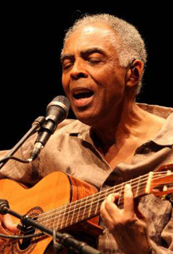
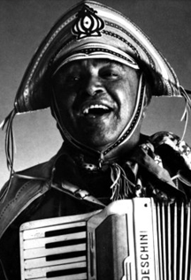
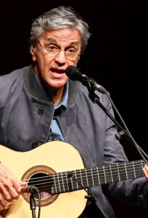

Sou formado em Geografia, Ambiente, Território e Turismo. Fiz minha graduação em Gênova na Itália. Trabalhei no Instituto Estrada Real de BH e essa foi minha única ligação com meu curso de formação. No mesmo período em que estudava na Itália entrei no mundo do designer, marketing digital e música. Sou empreendedor, fundei junto ao meu pai em 2003 a empresa Atacadista Online, e-commerce. Em 2014 vendi a minha participação na empresa para abrir um novo negócio. Criamos então o marketplace Amo Casa, hoje ainda sou sócio, mas administro somente o blog, mídias sociais e canal de vídeos. O canal de vendas também foi vendido. Atualmente procuro conhecimentos no setor de programação, tenho muita experiência em marketing digital e busco novos conhecimentos para desenvolver minhas ideias sem precisar sempre terceirizar esse serviço....
|  | Gilberto Gil!Gilberto Passos Gil Moreira, GCIH (Salvador, 26 de junho de 1942), é um cantor, compositor, multi-instrumentista, produtor cultural e político brasileiro, conhecido por sua inovação musical e por ser vencedor de prêmios Grammys, Grammy Latino, galardeado pelo governo francês com a Ordem Nacional do Mérito (1997)... |
|  | Luiz Gonzaga!Luiz Gonzaga do Nascimento (Exu, 13 de dezembro de 1912 – Recife, 2 de agosto de 1989) foi um compositor e cantor brasileiro. Conhecido como o Rei do Baião, ele foi uma das mais completas, importantes e inventivas figuras da música popular brasileira. Cantando acompanhado de sua sanfona, zabumba e triângulo, ... |
|  | Caetano Veloso!Caetano Emanuel Viana Teles Veloso (Santo Amaro, 7 de agosto de 1942) é um músico, produtor, arranjador e escritor brasileiro. Com uma carreira que ultrapassa cinco décadas, Caetano construiu uma obra musical marcada pela releitura e renovação[1] e considerada amplamente como possuidora de grande valor intelectual e poético.[2][3] Embora desde cedo tivesse aprendido a tocar violão em Salvador, escrito entre os anos de 1960... |